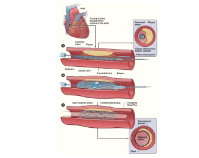

Home
Currículo
Especialidades
Contato
Formação profissional:
- Graduado pela Universidade Federal de São Paulo (Escola Paulista de Medicina)
- Residência em Clínica Médica pela Faculdade de Medicina da Universidade de São Paulo
- Residência em Cardiologia pela Faculdade de Medicina da Universidade de São Paulo
- Doutorado pela Faculdade de Medicina da Universidade de São Paulo
- Concurso de Livre-docência pelo Departamento de Clínica Médica da Faculdade de Medicina da Universidade de São Paulo
- Membro da Heart Rhythm Society (American Heart Association) e ECAS (European Cardiac Arrhythmia Society)
Atuação:
- Professor Associado do Departamento de Clínica Médica da Faculdade de Medicina da Universidade de São Paulo
- Coordenador Geral e Didático do Laboratório de Simulação da Faculdade Ciências Médicas de Minas Gerais
- Membro da Comissão Diretora do Centro de Cardiologia do Hospital Sírio-Libanês
- Coordenador do Programa de Residência Médica em Cardiologia do Hospital Sírio-Libanês
- Membro da Comissão Científica do Centro de Cardiologia
